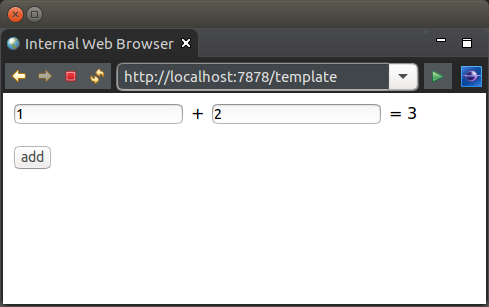

This tutorial looks at testing a WoOF application.
To focus on testing, the below simple application to add two numbers will be used.
Furthermore, production quality testing would cover a lot more test scenarios than is covered in this tutorial. The additional scenarios, however, have been excluded for brevity. They would all follow a similar pattern as described by this tutorial.
The application being tested has one page.
<html>
<body>
<form action="#{add}">
<p><input type="text" name="a" value="${a}" />
+ <input type="text" name="b" value="${b}" />
= ${result}</p>
<input type="submit" value="add" />
</form>
</body>
</html>
With the backing logic class.
public class TemplateLogic {
@Data
@HttpParameters
public static class Parameters implements Serializable {
private String a;
private String b;
private String result;
}
public void add(Parameters parameters, Calculator calculator) {
int a = Integer.parseInt(parameters.getA());
int b = Integer.parseInt(parameters.getB());
parameters.setResult(String.valueOf(calculator.plus(a, b)));
}
public Parameters getTemplateData(Parameters parameters) {
return parameters;
}
}
And injected dependency.
public class Calculator {
public int plus(int a, int b) {
return a + b;
}
}
The following demonstrates unit testing the template logic class. As the template logic class is a POJO (Plain Old Java Object), it is unit tested like any other Java class.
@Test
public void unitTest() {
// Load the parameters
Parameters parameters = new Parameters();
parameters.setA("1");
parameters.setB("2");
assertNull(parameters.getResult(), "Shoud not have result");
// Test
TemplateLogic logic = new TemplateLogic();
logic.add(parameters, new Calculator());
assertEquals("3", parameters.getResult(), "Incorrect result");
}
This is a simple application. More complex applications may be dependency injecting more complex objects such as a java.sql.Connection or javax.persistence.EntityManager. Again as the template logic is a POJO, any mocking framework can be used to mock these objects for use in testing.
As OfficeFloor is a very light weight framework, it starts and stops fast enough to be run with the unit tests.
The following demonstrates using the mock WoOF server. This server executes very fast, as there is no socket communication. Requests are passed in memory to the server making it very fast for testing. This also has the benefit of avoiding port binding clashes on shared build servers.
@RegisterExtension
public final MockWoofServerExtension server = new MockWoofServerExtension();
@Test
public void systemTest() throws Exception {
// Send request to add
MockHttpResponse response = this.server
.sendFollowRedirect(MockHttpServer.mockRequest("/template+add?a=1&b=2").method(HttpMethod.POST));
assertEquals(200, response.getStatus().getStatusCode(), "Should be successful");
// Ensure added the values
String entity = response.getEntity(null);
assertTrue(entity.contains("= 3"), "Should have added the values");
}
JUnit 4 example:
@Rule
public final MockWoofServerRule server = new MockWoofServerRule(this);
@Test
public void systemTest() throws Exception {
// Send request to add
MockHttpResponse response = this.server
.sendFollowRedirect(MockHttpServer.mockRequest("/template+add?a=1&b=2").method(HttpMethod.POST));
assertEquals("Should be successful", 200, response.getStatus().getStatusCode());
// Ensure added the values
String entity = response.getEntity(null);
assertTrue("Should have added the values", entity.contains("= 3"));
}
However, should you want to run WoOF listening on sockets, then use the following. Again this is fast enough to run with the unit tests, but is neglibly slower due to socket communication.
@ExtendWith(OfficeFloorExtension.class)
public class TemplateLogicCallingTest {
@RegisterExtension
public final HttpClientExtension client = new HttpClientExtension();
@Test
public void callingSystemTest() throws Exception {
// Send request to add
HttpResponse response = this.client.execute(new HttpPost(this.client.url("/template+add?a=1&b=2")));
assertEquals(200, response.getStatusLine().getStatusCode(), "Should be successful");
// Ensure added the values
String entity = EntityUtils.toString(response.getEntity());
assertTrue(entity.contains("= 3"), "Should have added the values: " + entity);
}
JUnit 4 example:
@Rule
public final OfficeFloorRule officeFloor = new OfficeFloorRule(this);
@Rule
public final HttpClientRule client = new HttpClientRule();
@Test
public void callingSystemTest() throws Exception {
// Send request to add
HttpResponse response = this.client.execute(new HttpPost(this.client.url("/template+add?a=1&b=2")));
assertEquals("Should be successful", 200, response.getStatusLine().getStatusCode());
// Ensure added the values
String entity = EntityUtils.toString(response.getEntity());
assertTrue("Should have added the values: " + entity, entity.contains("= 3"));
}
Dependencies managed by OfficeFloor can also be injected into tests.
@Test
public void injectDependency(Calculator calculator) {
int result = calculator.plus(1, 2);
assertEquals(3, result, "Should calculate correct result");
}
JUnit 4 example:
private @Dependency Calculator calculator;
@Test
public void injectDependency() {
int result = calculator.plus(1, 2);
assertEquals("Should calculate correct result", 3, result);
}
OfficeFloor provides a Maven plug-in to enable integration testing. The following is the pom.xml plug-ins configuration of running integration tests.
<!-- Open/Close OfficeFloor for Integration tests --> <plugin> <groupId>net.officefloor.maven</groupId> <artifactId>officefloor-maven-plugin</artifactId> <executions> <execution> <id>open</id> <goals> <goal>open</goal> </goals> </execution> <execution> <id>close</id> <goals> <goal>close</goal> </goals> </execution> </executions> </plugin> <!-- Run Integration tests --> <plugin> <groupId>org.apache.maven.plugins</groupId> <artifactId>maven-failsafe-plugin</artifactId> <executions> <execution> <goals> <goal>integration-test</goal> <goal>verify</goal> </goals> </execution> </executions> </plugin>
The integration test is then as follows.
@RegisterExtension
public HttpClientExtension client = new HttpClientExtension();
@Test
public void integrationTest() throws Exception {
// Send request to add
HttpPost request = new HttpPost("http://localhost:7878/template+add?a=1&b=2");
HttpResponse response = this.client.execute(request);
// Ensure added the values
String entity = EntityUtils.toString(response.getEntity());
assertTrue(entity.contains("= 3"), "Should have added the values: " + entity);
}
JUnit 4 example:
@Rule
public final HttpClientRule client = new HttpClientRule();
@Test
public void integrationTest() throws Exception {
// Send request to add
HttpPost request = new HttpPost("http://localhost:7878/template+add?a=1&b=2");
HttpResponse response = this.client.execute(request);
// Ensure added the values
String entity = EntityUtils.toString(response.getEntity());
assertTrue("Should have added the values: " + entity, entity.contains("= 3"));
}
While this is a simple request test, it also enables using more complex integration test tools (e.g. SeleniumHQ).
The next tutorial looks at configuring OfficeFloor applications.